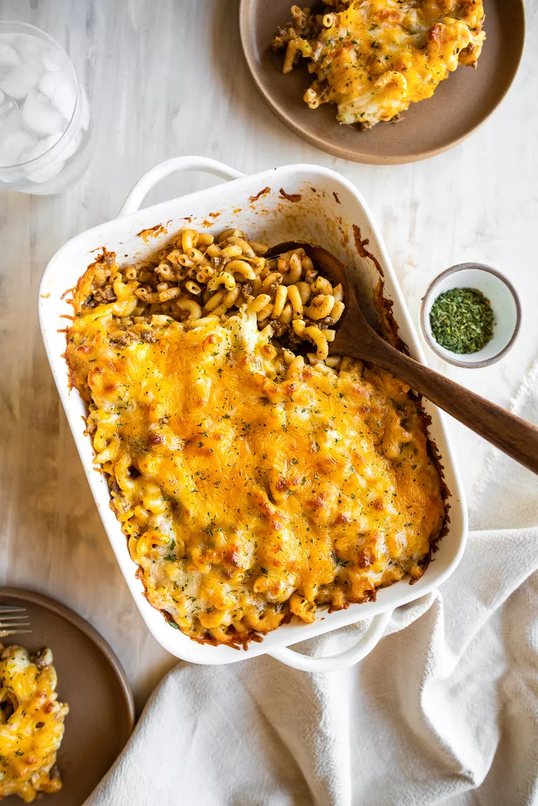

Cheeseburger Casserole
- PREP TIME
- COOK TIME
- TOTAL TIME
- SERVINGS
15 mins
30 mins
45 mins
6 to 8 servings

Ingredients
- 12 ounces (340g) dried elbow macaroni (about 6 cups dry pasta)
- 1 1/2 pounds ground beef (I like 80:20)
- 2 teaspoons oregano
- 1 teaspoon sea salt, plus more as needed for salting the pasta water
- 1 teaspoon black pepper
- 1 teaspoon chili powder
- 1 teaspoon ground cumin
- 2 teaspoons butter
- 1/2 cup chopped yellow onion
- 1 tablespoon minced garlic
- 1/4 cup tomato puree
- 1 1/2 cups heavy cream
- 1/4 cup chicken stock
- 1/2 teaspoon dried parsley
- 1/2 teaspoon dried basil
- 2 cups shredded Monterey Jack cheese, divided
- 2 cups shredded cheddar cheese, divided
Directions
Step 1
Preheat the oven to 400°F.
Step 2
Put a large pot of salted water on to boil (1 tablespoon salt for every 2 quarts of water).
Step 3
Once the water has reached a rolling boil, add the dry pasta, and cook, uncovered, stirring occasionally,
about 9 to 11 minutes, until mostly cooked through but still a bit firm to the bite.
As the pasta cooks, heat a large skillet over medium heat and add the ground beef.
Step 4
Season with oregano, sea salt, black pepper, chili powder, and ground cumin. Cook, stirring occasionally, until the beef is browned and no longer pink, about 5 minutes.
Step 5
Using a colander, drain and set to the side.
Add the butter, onions, garlic, and tomato puree to the skillet with the ground beef. Stir until all
ingredients are combined.
Step 6
Add the cooked pasta to the beef mixture and stir to combine. Add the heavy whipping cream, chicken stock, parsley, basil, 1 1/2 cups of the shredded Monterey Jack cheese, and 1 cup of the shredded cheddar cheese. Stir until combined.
Step 7
Transfer to a 9x13-inch casserole dish (no need to grease) and top with the remaining cheese.
Step 8
Bake the casserole for 15-20 minutes, until the cheese is browned and bubbly.
Step 9
For a looser casserole, serve right away. For a casserole that holds its shape a bit, let sit 10 minutes
before serving.
You can also freeze it by storing it in an airtight container for up to 3 months. To reheat, microwave
or
place in the oven at 350°F oven until it is heated through (this will depend on the portion size you are
reheating).